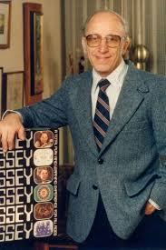
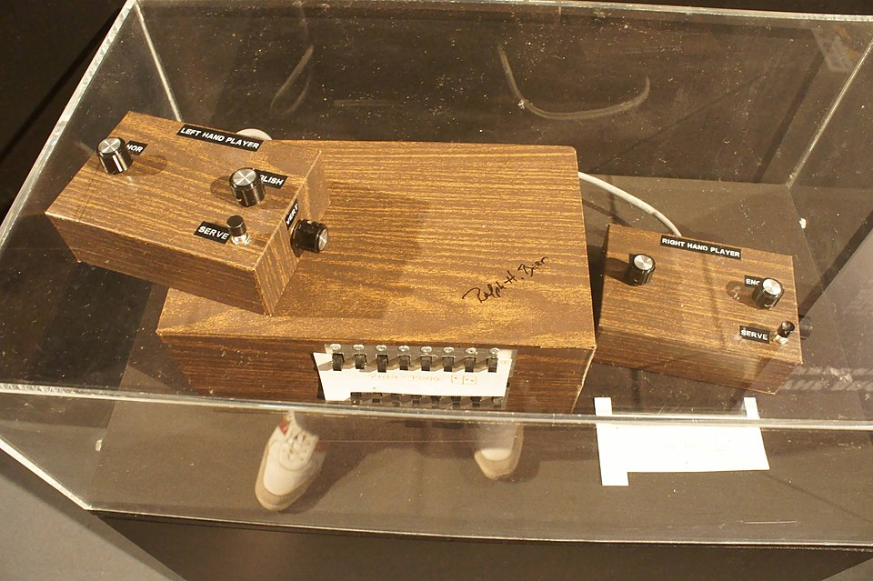
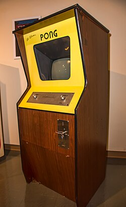

O Magnavox Odyssey não é apenas um console antigo; ele é a "pedra fundamental" da indústria de jogos eletrônicos. Lançado em 1972, ele transformou a televisão de um receptor passivo em uma plataforma interativa.
1. O Visionário: Ralph Baer

Conhecido como o "Pai dos Videogames",Ralph Baer era um engenheiro da Sanders Associates que, já nos anos 60, defendia que as televisões deveriam servir para algo mais do que apenas assistir a canais abertos. Em 1966, ele desenvolveu o protótipo "Brown Box", que permitia jogar games simples como pingue-pongue e futebol. Após várias tentativas de licenciamento, a Magnavox comprou a ideia, refinando o design para o que viria a ser o Odyssey.

Protótipo Brown Box"Quando você construía televisores, tinha todo esse equipamento de teste. E você tinha todas essas linhas e quadrados na tela para testá-lo. Então me ocorreu que poderia ser divertido para as pessoas controlarem as linhas e quadrados na tela."
2. O Console e sua Tecnologia
Diferente dos consoles modernos, o Odyssey era um sistema analógico e extremamente rudimentar:
- Sem Som: O console era totalmente silencioso.
- Sem Cor: O hardware gerava apenas quadrados brancos em um fundo preto. Para simular cores e cenários, os jogadores colavam películas plásticas (overlays) na tela da TV.
- Cartões de Circuito: Ele utilizava cartões que pareciam cartuchos, mas não continham software. Eles serviam apenas como "jumpers" que alteravam os circuitos internos para mudar o comportamento dos pontos na tela.
- Acessórios: O console vinha acompanhado de fichas, dados e dinheiro de brinquedo para ajudar a marcar a pontuação, já que o aparelho não tinha memória para isso.
3. O Odyssey no Brasil: O Pioneirismo da Planil
O Brasil teve um papel curioso nessa história. Em 1972, o país recebeu o console de forma quase simultânea ao lançamento americano, através da empresa Planil, localizada no Rio de Janeiro.
- Importação e Montagem: A Planil importava os componentes e montava o console em solo brasileiro.
- Adaptação: O manual e as caixas foram traduzidos, tornando-o o primeiro videogame comercializado oficialmente no Brasil.
- Curiosidade: Como o mercado era de nicho e o custo era elevado, o Odyssey da Planil é hoje um item de colecionador extremamente raro, muitas vezes mais difícil de encontrar do que a versão original americana.
4. O Legado e a Briga Judicial com a Atari
O jogo de "tênis" do Odyssey serviu de inspiração direta para Nolan Bushnell criar o Pong, da Atari. Isso resultou em um dos processos judiciais mais famosos da história da tecnologia. A Magnavox venceu, provando que Ralph Baer detinha a patente original da interatividade em telas de vídeo, o que obrigou a Atari (e diversas outras empresas subsequentes) a pagarem royalties por anos. Resumo: O Magnavox Odyssey provou que o entretenimento doméstico poderia ser ativo. Sem a teimosia de Baer e a aposta da Magnavox (e da Planil no Brasil), a indústria de bilhões de dólares que conhecemos hoje poderia ter demorado décadas a mais para nascer.

Acade Pong da Atari